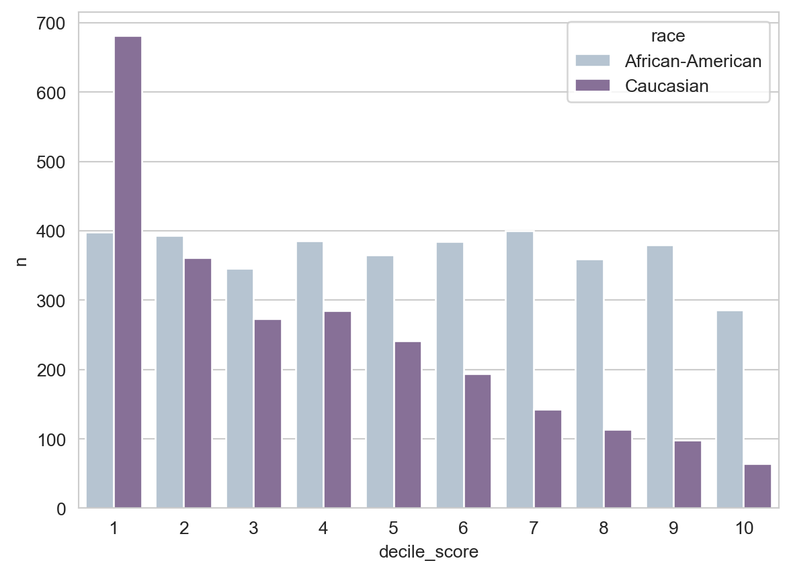
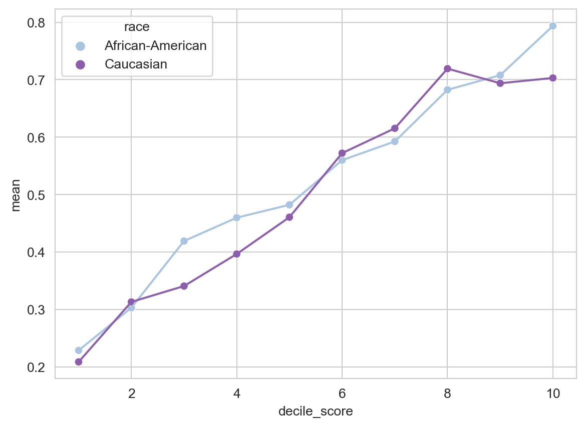
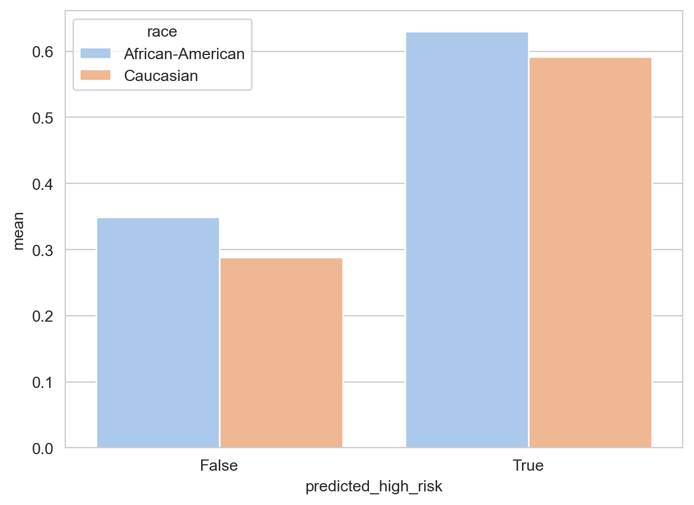

import pandas as pd
import seaborn as sns
import numpy as np
sns.set_style("whitegrid")
np.set_printoptions(precision = 3)
url = "https://raw.githubusercontent.com/PhilChodrow/ml-notes/main/data/compas/compas.csv"
compas = pd.read_csv(url)5 Introduction to Algorithmic Disparity: COMPAS
Download the live notebook corresponding to these notes here.
Today we are going to study an extremely famous investigation into algorithmic decision-making in the sphere of criminal justice by Angwin et al. (2022), originally written for ProPublica in 2016. This investigation significantly accelerated the pace of research into bias and fairness in machine learning, due in combination to its simple message and publicly-available data.
It’s helpful to look at a sample form used for feature collection in the COMPAS risk assessment.
You may have already read about the COMPAS algorithm in the original article at ProPublica. Our goal today is to reproduce some of the main findings of this article and set the stage for a more systematic treatment of bias and fairness in machine learning.
Parts of these lecture notes are inspired by the original ProPublica analysis and Allen Downey’s expository case study on the same data.
Data Preparation
Let’s first obtain the data. I’ve hosted a copy on the course website, so we can download it using a URL.
This data set was obtained by Angwin et al. (2022) through a public records request. The data comprises two years worth of COMPAS scoring in Broward County, Florida.
For today we are only going to consider a subset of columns.
cols = ["sex", "race", "decile_score", "two_year_recid"]
compas = compas[cols]We are also only going to consider white (Caucasian) and Black (African-American) defendants:
is_white = compas["race"] == "Caucasian"
is_black = compas["race"] == "African-American"
compas = compas[is_white | is_black]
compas = compas.copy()Our data now looks like this:
compas.head()| sex | race | decile_score | two_year_recid | |
|---|---|---|---|---|
| 1 | Male | African-American | 3 | 1 |
| 2 | Male | African-American | 4 | 1 |
| 3 | Male | African-American | 8 | 0 |
| 6 | Male | Caucasian | 6 | 1 |
| 8 | Female | Caucasian | 1 | 0 |
Preliminary Explorations
Let’s do some quick exploration of our data. How many defendants are present in this data of each sex?
compas.groupby("sex").size()sex
Female 1219
Male 4931
dtype: int64What about race?
compas.groupby("race").size()race
African-American 3696
Caucasian 2454
dtype: int64The decile score is the algorithm’s prediction. Higher decile scores indicate that, according to the COMPAS model, the defendant has higher likelihood to be charged with a crime within the next two years. In the framework we’ve developed in this class, you can think of the decile score as being produced by computing a score like \(s_i = \langle \mathbf{w}, \mathbf{x}_i \rangle\) for each defendant \(i\), and then dividing these into the lowest 10% (decile score 1), the next 10% (decile score 2), the next 10% (decile score 3) and so on.
The easiest way to see how this looks is with a bar chart, which we can make efficiently using the seaborn (sns) package.
counts = compas.groupby(["race", "decile_score"]).size().reset_index(name = "n")
p = sns.barplot(data = counts, x = "decile_score", y = "n", hue = "race", palette = "BuPu", saturation = 0.5)
You may notice that the number of white defendants who receive a given decile score tends to decrease as the score increases, whereas the number of Black defendants remains relatively constant.
Finally, let’s take a look at the recidivism rate in the data:
compas["two_year_recid"].mean()0.4661788617886179So, in this data, approximately 47% of all defendants went on to be charged of another crime within the next two years. We can also compute the recidivism rate by race:
compas.groupby("race")["two_year_recid"].mean()race
African-American 0.514340
Caucasian 0.393643
Name: two_year_recid, dtype: float64The ProPublica Findings
We’re going to treat the COMPAS algorithm as a binary classifier, but you might notice a problem: the algorithm’s prediction is the decile_score column, which is not actually a 0-1 label. Following the analysis of Angwin et al. (2022), we are going to construct a new binary column in which we say that a defendant is predicted_high_risk if their decile_score is larger than 4.
compas["predicted_high_risk"] = (compas["decile_score"] > 4)Now we have a binary prediction, and we can compute things like confusion matrices:
from sklearn.metrics import confusion_matrix
confusion_matrix(compas["two_year_recid"],
compas["predicted_high_risk"])array([[2129, 1154],
[ 993, 1874]])We can normalize this confusion matrix to get things like the false positive and false negative rates:
confusion_matrix(compas["two_year_recid"],
compas["predicted_high_risk"],
normalize = "true")array([[0.648, 0.352],
[0.346, 0.654]])We see that the algorithm (predicting recidivism if decile_score is 5 or above) is right about 65% of the time. A bit more specifically, both the true positive (TP) and true negative (TN) rates are approximately 65%. Both the false positive (FP) and false negative (FN) rates are approximately 35%.
We can also check the overall accuracy:
(compas["two_year_recid"] == compas["predicted_high_risk"]).mean()0.6508943089430894The accuracy is relatively consistent even when we break things down by race:
black_ix = compas["race"] == "African-American"
white_ix = compas["race"] == "Caucasian"
correct_pred = compas["two_year_recid"] == compas["predicted_high_risk"]
# accuracy on Black defendants
accuracy_black = correct_pred[black_ix].mean()
# accuracy on white defendants
accuracy_white = correct_pred[white_ix].mean()
accuracy_black, accuracy_white(0.6382575757575758, 0.6699266503667481)However, and this was the main finding of the ProPublica study, the FPR and FNR are very different when we break down the data by race. Here’s the confusion matrix for Black defendants:
confusion_matrix(compas["two_year_recid"][black_ix],
compas["predicted_high_risk"][black_ix],
normalize = "true")array([[0.552, 0.448],
[0.28 , 0.72 ]])And here it is for white defendants:
confusion_matrix(compas["two_year_recid"][white_ix],
compas["predicted_high_risk"][white_ix],
normalize = "true")array([[0.765, 0.235],
[0.477, 0.523]])The ProPublica study focused on the false positive rate (FPR), which is in the top right corner of the confusion matrices. The FPR of 44% for Black defendants means that, out of every 100 Black defendants who in fact will not commit another crime, the algorithm nevertheless predicts that 44 of them will. In contrast, the FPR of 23% for white defendants indicates that only 23 out of 100 non-recidivating white defendants would be predicted to recidivate.
There are a few ways in which we can think of this result as reflecting bias:
- The algorithm has learned an implicit pattern wherein Black defendants are intrinsically more “criminal” than white defendants, even among people who factually never committed another crime. This is a bias in the patterns that the algorithm has learned in order to formulate its predictions. This is related to the idea of representational bias, in which algorithms learn and reproduce toxic stereotypes about certain groups of people.
- Regardless of how the algorithm forms its predictions, the impact of the algorithm being used in the penal system is that more Black defendants will be classified as high-risk, resulting in more denials of parole, bail, early release, or other forms of freedom from the penal system. So, the algorithm has disparate impact on people. This is sometimes called allocative or distributional bias: bias in how resources or opportunities (in this case, freedom) are allocated or distributed between groups.
Sometimes predictive equality is also defined to require that the false negative rates (FNRs) be equal across the two groups as well.
Predictive Equality
Let’s see if we can be a little more precise about what is wrong here. We’ll give a name to the property that the COMPAS algorithm fails to satisfy:
Definition 5.1 is due to Corbett-Davies et al. (2017). Some related concepts to predictive equality are error rate balance (Chouldechova 2017), balance for the positive/negative class (Kleinberg 2018), and separation (Barocas, Hardt, and Narayanan 2023) are all related to predictive equality.
Definition 5.1 (Predictive Equality) A binary classifier satisfies predictive equality with respect to groups \(A\) and \(B\) if its false positive rate for group \(A\) are the same as its false positive rate for \(B\).
So, the claim of Angwin et al. (2022) et al. is:
- The COMPAS algorithm fails to satisfy predictive equality with respect to race.
- The COMPAS algorithm is therefore unjustly biased with respect to race.
This argument implicitly equates predictive equality with fairness or lack of bias. Is that the best or only way to think about fair decision-making?
Sufficiency
In fact, formally defining fairness in decision-making is a very complex topic.
Angwin et al. (2022) kicked off a vigorous discussion about what it means for an algorithm to fair and how to measure deviations from bias. For example, Corbett-Davies et al. (2017) consider a different idea of fairness. While predictive equality requires that the FPRs for white and Black defendants be equal, sufficiency expresses a different intuition:
Definition 5.2 A score-based binary classifier satisfies sufficiency if, among everyone who receives a score of \(s\), the probability of a positive outcome does not vary systematically by group.
In the context of COMPAS, if COMPAS satisfied sufficiency, then it would be the case that
Compare: a female student who receives an A- in a linear algebra class and a male student who receives an A- in a linear algebra class should both have the same chance of succeeding in a machine learning class.
A white defendant and a Black defendant who each receive the same score should both have the same risk of recidivating.
Another way to say this is that a score of 7 means the same thing, no matter the race of the defendant.
Let’s test for sufficiency in the decile scores. We can compute the recidivism rates for each race at each decile score using some Pandas .groupby magic:
means = compas.groupby(["race", "decile_score"])["two_year_recid"].mean().reset_index(name = "mean")
sns.lineplot(data = means,
x = "decile_score",
y = "mean",
hue = "race",
legend = None,
palette = "BuPu")
points = sns.scatterplot(data = means,
x = "decile_score",
y = "mean",
hue = "race",
palette = "BuPu")
The actual recidivism rate at each risk score is roughly the same between Black and white defendants, especially for decile scores past 5 or so.
Angwin et al. (2022) convert the decile risk scores into a decision by assuming that an individual is classified as “high risk” if their decile score is 4 or above. If we follow this approach and ask about the rates of re-arrest in each group, we obtain the following results:
means = compas.groupby(["race", "predicted_high_risk"])["two_year_recid"].mean().reset_index(name = "mean")
p = sns.barplot(data = means,
x = "predicted_high_risk",
y = "mean",
hue = "race",
palette = "BuPu",
saturation = 0.5)
From the perspective of sufficiency using this threshold, the algorithm might actually appear to be biased in favor of Black defendants rather than white ones: of those who were predicted high risk, slightly more Black than white defendants were arrested within the next two years. Formal statistical hypothesis tests are typically used to determine whether this difference is sufficiently “real” to warrant correction. In most of the published literature, scholars have considered that the two rates are sufficiently close that we should instead simply say that COMPAS appears to be relatively close to satisfying sufficiency.
Indeed, in a rejoinder article published by affiliates of the company Northpointe which produced COMPAS, the fact that COMPAS satisfies sufficiency is one of the primary arguments (Flores, Bechtel, and Lowenkamp 2016).
Recap
In these notes, we replicated the data analysis of Angwin et al. (2022), finding that the COMPAS algorithm has disparate error rates between Black and white defendants. We introduced the idea that we could formally define a definition of fairness, like predictive equality, and the idea that the COMPAS predictor violates this definition. On the other hand, we also introduced a different definition of fairness—sufficiency—and found that the COMPAS algorithm is relatively well-calibrated.
Some Questions Moving Forward
These findings raise some of the following questions:
- Can we have it all? Could we modify the COMPAS algorithm in such a way that it satisfies both predictive equality and sufficiency? Could we then call it “fair” or “unbiased?”
- Are there other ways to define fairness? Which ones are most compelling to us? Does the right idea of fairness depend on the context in which we apply it?
- How did this happen? The COMPAS algorithm was never trained on race data about the defendant. How did it happen that this algorithm nevertheless made recommendations at different rates across groups?
- Is automated decision-making legitimate in this setting? Can it be legitimate (just, fair) to use an automated decision-system for making recommendations about parole and sentencing decisions at all? What safeguards and forms of recourse are necessary for the legitimate use of automated decision-making in criminal justice?
- What are the systemic impacts? Disparate sentencing decisions can have downstream impacts on communities and institutions. How could application of the COMPAS algorithm exacerbate systemic inequalities?
References
Angwin, Julia, Jeff Larson, Surya Mattu, and Lauren Kirchner. 2022. “Machine Bias.” In Ethics of Data and Analytics, 254–64. Auerbach Publications.
Barocas, Solon, Moritz Hardt, and Arvind Narayanan. 2023. Fairness and Machine Learning: Limitations and Opportunities. Cambridge, Massachusetts: The MIT Press. https://fairmlbook.org/pdf/fairmlbook.pdf.
Chouldechova, Alexandra. 2017. “Fair Prediction with Disparate Impact: A Study of Bias in Recidivism Prediction Instruments.” Big Data 5 (2): 153–63. https://doi.org/10.1089/big.2016.0047.
Corbett-Davies, Sam, Emma Pierson, Avi Feller, Sharad Goel, and Aziz Huq. 2017. “Algorithmic Decision Making and the Cost of Fairness.” In Proceedings of the 23rd ACM SIGKDD International Conference on Knowledge Discovery and Data Mining, 797–806. Halifax NS Canada: ACM. https://doi.org/10.1145/3097983.3098095.
Flores, Anthony W, Kristin Bechtel, and Christopher T Lowenkamp. 2016. “False Positives, False Negatives, and False Analyses: A Rejoinder to Machine Bias: There’s Software Used Across the Country to Predict Future Criminals. And It’s Biased Against Blacks.” Federal Probation 80: 38.
Kleinberg, Jon. 2018. “Inherent Trade-Offs in Algorithmic Fairness.” In Abstracts of the 2018 ACM International Conference on Measurement and Modeling of Computer Systems, 40–40. Irvine CA USA: ACM. https://doi.org/10.1145/3219617.3219634.
© Phil Chodrow, 2024